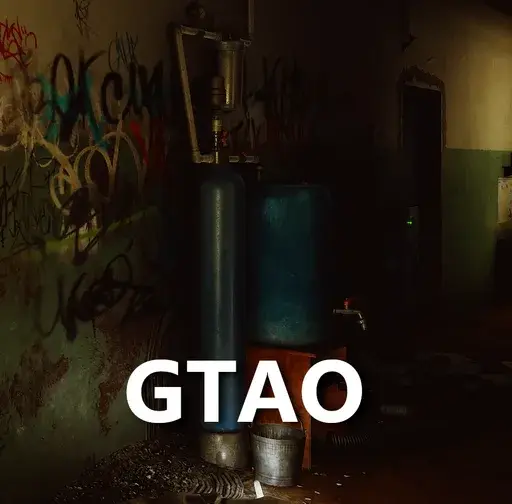

AO Replacer
- Downloads
- 7,266
- Favourites
- 24
- Mod lists
- 42
AO Replacer
NOTE: If you are using SPT-VR, you do not need this mod. It is built into SPT-VR because it requires it for proper stereo/VR support. You will get errors if you use this with SPT-VR
This is a total replacement of THE CITY’s built in AO. THE CITY uses an AO method called “HBAO” or horizon based ambient occlusion. This replacer uses “GTAO” or ground truth ambient occlusion. GTAO is a more modern and accurate method of doing ambient occlusion.
If you aren’t sure what exactly AO is, here’s some examples - https://slow.pics/c/lVhGdZXE
When you go to that link, if you click the picture, it’ll cycle through No AO, GTAO (this mod), and HBAO (EFT’s). At the top left, you can click the comparison drop down and select the second comparison to see another example. At the bottom, you can enable a slider example so you can move a slider between examples
There isn’t any configuration on this currently, possibly in the future. It just takes over the AO settings in graphics settings of THE CITY.
NOTE: Colored Ultra AO currently does the same as just Ultra in this mod since this GTAO doesn’t have an equivalent
To install, just copy the contents of the “AOReplacer” folder into your SPT directory.
This is compatible with Hollywood FX/Graphics but the ambient occlusion settings in that mod will be ignored in favor of this one. Hollywood Graphics uses the built in AO, this replaces that AO. Double ambient occlusion is bad so I want to avoid that happening.
I did some testing on my PC and from what I can tell there’s no noticeable difference in performance. That’s for me though, can’t know if it’ll affect other setups differently.
Support my work on Ko-fi: https://ko-fi.com/matsix
Credits: AmplifyCreations - https://github.com/AmplifyCreations/AmplifyOcclusion
Version
1.0.3
Update Changelog:
- Fixes artifacting around grass during winter season
Version
1.0.2
Changelog:
- Disables the filter which should reduce/remove ghosting
Version
1.0.1
Changelog:
- Adjusted AO to use Deferred/GBuffer rather than having it be a post effect using camera normals
This change makes it so that the AO takes effect before the lighting pass. This results in more realistic/accurate AO. There won’t be just shading on every corner. This causes the AO effect all together to be less aggressive and noticeable. You’ll only see shading when the lighting in the spot is darker/not lit up by any lights. This is more in-line with my goal for this mod because THE CITY’s AO is a post effect that just applies to the final scene and doesn’t take lighting, normals, and reflections into account.
Built-in HBAO vs GTAO using Gbuffer: https://imgsli.com/NDQ2NTA3
No AO vs GTAO using GBuffer: https://imgsli.com/NDQ2NTEw
NOTE: If you use anything that does version checking, re-download this, the version number should be fixed now
Version
1.0.0
First release… Which means I’ll probably release a patch fixing something in a few hours.